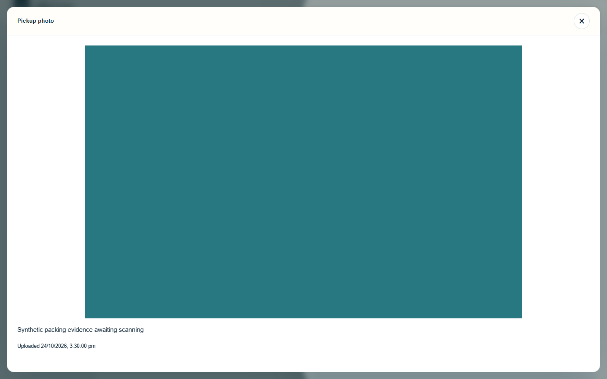
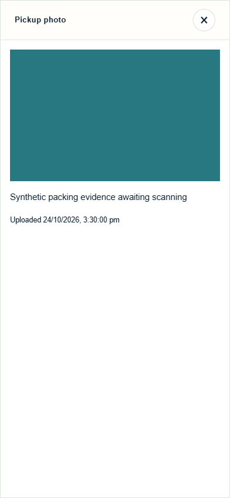
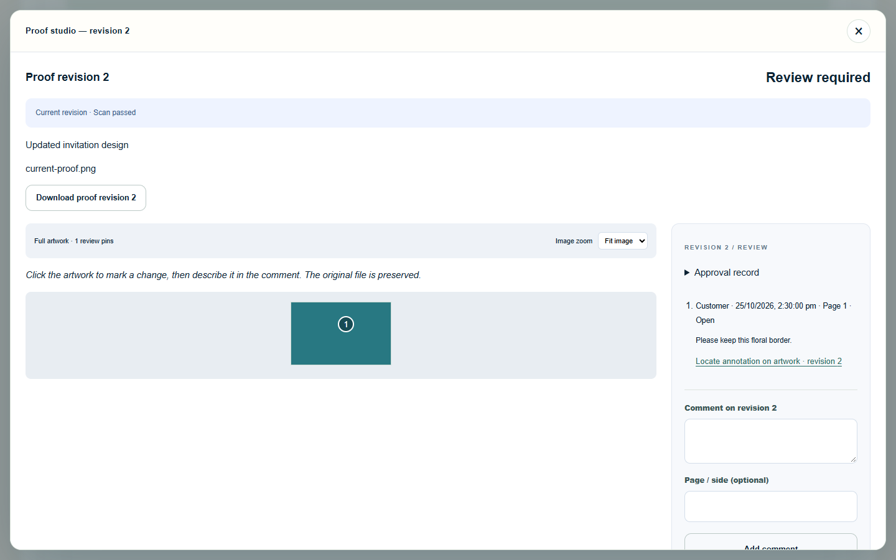
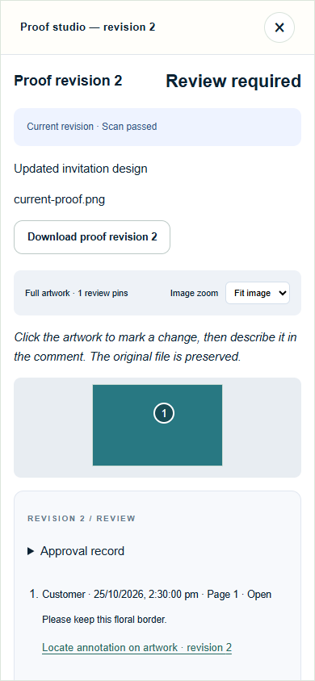

Owner fulfilment stages · mobileResponsive job drawer and current stage.

Private evidence preview · desktopFull aspect-ratio synthetic image and server upload time.

Private evidence preview · mobileMobile image and caption view.

Access revoked · desktopPresence and remote cursors disappear after project access ends.

Access revoked · mobileRevocation state at phone size.
Screens were inspected for clipping, overflow, alignment, legibility and photo cropping. See README.md in this folder for full context and limitations.